0（读作“阿列夫零”）。它是希伯来字母“”，带上下标0组成。[1]设N表示自然数集合，Z表示整数集合（所有正的与负的整数以及0），那么则可以写#N=0和#Z=0。
0（读作“阿列夫零”）。它是希伯来字母“”，带上下标0组成。[1]设N表示自然数集合，Z表示整数集合（所有正的与负的整数以及0），那么则可以写#N=0和#Z=0。关于足球运动员和时装模特（一一对应关系）
我们回到之前的问题：什么情况下可以认为两个集合有相同多的元素呢？
对两个有限集而言，这不是个问题。至少原则上，我们可以通过计数来解决这个问题：如果集合A与集合B含有相同数量的元素，我们可以说这两个集合“一样大”。
然而，当我们讨论无穷集时，一个问题就出现了。因为此时我们无法数出集合所含元素的个数。那么可不可以不数数，就能比较两个集合的大小呢？事实证明，可以。
让我们换一种方式来考察一下两个有限集的比较问题。设想有一个时尚俱乐部，每年的顶级时装模特和著名足球运动员在此聚会。派对正开得热火朝天，许多足球运动员和模特都在舞池里跳舞。
不去数数，我们能否确定究竟是球员比模特多还是模特比球员多，抑或两者数量相等呢？
解决这个问题的办法很简单：你所要做的就是播放一段轻音乐，然后宣布每位球员必须邀请一位模特跳舞。此时会有3种可能性：
1）所有人都在跳舞，在这种情况下球员的数量与模特的数量一致。
2）有部分球员找不到舞伴，孤独而悲伤地倚靠在吧台。这种情况，很明显表示球员比模特多。
3）有部分模特单着——模特比球员的数量要多。
需要指出的是，这种比较方法并不能让我们知道球员和模特的确切数量。然而，我们想要的只是比较两类人群的大小。
这种方式也适用于无穷集之间的比较，在计数的方式不可行情况下，此法非常有效。
到此，是时候熟悉两个乏味但至关重要的概念了。
一对一映射（亦称单射）
若集合A和集合B之间存在一种对应关系，使得集合A中的不同元素分别对应集合B中的不同元素，反之亦然（可能存在无配对的元素），此对应关系被称为一对一映射（单射），简记为1:1。
例如，假设有3名足球运动员——罗纳尔多、梅西和姆巴佩，以及4名模特——阿德里安娜、吉赛尔、凯特和尼娜。如果我们将他们做如下匹配：
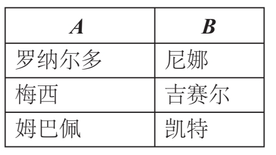
那么，我们在球员和模特两个集合之间建立了1:1对应关系，因为任意两位球员（集合A中不同元素）与不同的两位模特儿（集合B中不同元素）之间有了配对。注意到，阿德里安娜没有配对的球员，但从1:1对应的定义而言，并无影响。只要集合A中的每个元素都有唯一的配对，就有1:1的对应关系。
另外，我们也可以做如下配对：
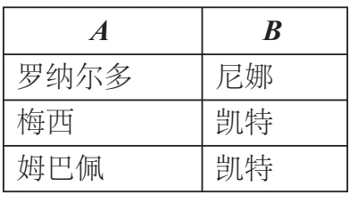
在这种情况下，对应关系不是1:1的，因为有两个不同的球员与同一个模特凯特配对。这说明，集合A所含元素数量大于集合B。
满射
若从集合A到集合B存在一种对应关系，使得B中每一个元素都有A中至少一个元素与之配对，此对应关系被称为满射。注意，可能A中有多个元素映射到B中的一个元素上（在这种情况下，映射不是1:1的）。此时，我们说A满射（到上映射）到B。
例如，假设我们现在有5名足球运动员：罗纳尔多、梅西、姆巴佩、凯恩和内马尔，以及与之前一样的4名模特——阿德里安娜、吉赛尔、凯特和尼娜。我们可以给他们建立如下的满射对应：
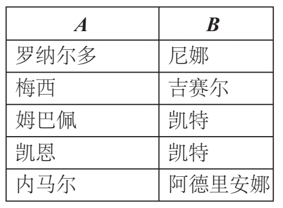
这是满射，因为集合B（4名模特）中的每个元素都与集合A（足球运动员）中至少一个元素配对。不过注意，这里有2名足球运动员被“映射”到同一名模特（凯特）。
另一种对应关系如下，却并不是满射：
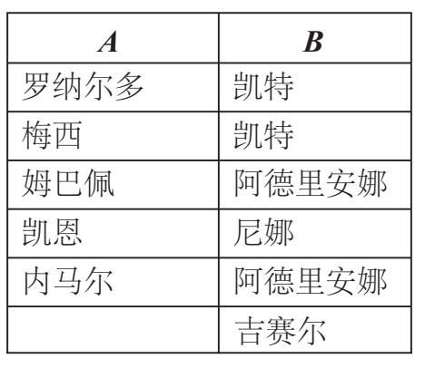
为什么呢？这是因为集合B中有一个元素吉赛尔并没有与A中的任何一个元素配对（注意到，表中有2名模特各对应2名足球运动员，独留下可怜的吉赛尔孤单无伴）。如果两个集合A和B之间既存在一对一的对应关系，又存在满射关系，这就意味着两个集合之间的元素可以完美配对——集合A中的每个元素有B中唯一一个元素与之对应，同样的集合B中每个元素有A中唯一一个元素与之对应。既是单射又是满射的映射被称为双射。
如果集合A和集合B都是有限集，毋庸置疑的是，只有当两个集合所含元素数量一致时，才有可能在它们之间建立既单又满的映射关系。我下面将对此解释：若从集合A到集合B存在一对一的关系（或双射），则意味着集合B含有的元素数量等于或大于集合A中的元素数量；若存在的是从A到B的满射对应，则集合A含有的元素数量等于或大于集合B中的元素数量。（B中每个元素可能与A中多个元素配对。）因此，当对应关系既单又满时，对于有限集而言，就意味着两个集合所含元素个数必须相同。
如下表所示的明星们，我们可以清晰阐明足球运动员和模特之间存在既单又满的对应关系，当且仅当这两个集合具有相同数量的元素。
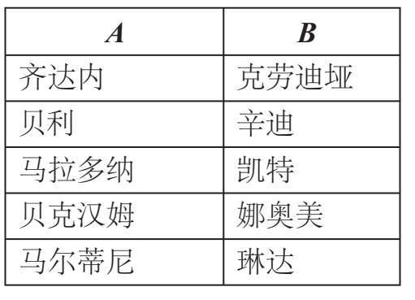
下面再给大家举个例子：
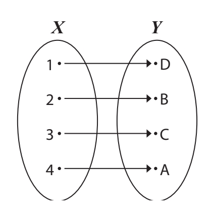
这也是既单又满的对应关系，此例中我们甚至不需要涉及任何足球运动员或模特这些具体事物。
现在我们已经弄清楚了有限集的情形，就让我们再回到无穷集。基于以上的讨论，定义两个集合（有限或无穷）的元素数量相等关系是：
定义：基数相等
如果两个集合A和B之间存在既单又满映射，则两集合基数相等。
这个定义中的“基数”是什么呢？你可能记得我们刚才提到过它。对于有限集，基数的含义是很清楚的。
定义：有限集的基数
对于有限集，其基数只是“集合所含元素个数”的一个花哨的术语。例如，集合A={17，42，1729，1234321}有4个元素，因此集合A的基数即为“4”。从今往后，我们用#A=4表达此意。
然而对于无穷集，“集合中元素的数目”的概念不是也不可能是显而易见的。对于两个无穷集，我们所能做的就是比较它们的基数。
伽利略悖论
17世纪初，伽利略提出了一个后来以他的名字命名的悖论。伽利略悖论涉及自然数集{1，2，3，4，…}和平方数集{1，4，9，16，…}之间既单又满的对应关系。可以如下表展示的那样对这两个集合中的元素进行配对。此时，A中每个元素都有一个且只有一个B中的元素与之相匹配。反之亦然。
悖论指出，一方面，自然数集合与其一个真子集（此处即平方数集）有相等的基数（因为两个集合之间建立了既单又满的对应关系）。另一方面，自然数比平方数要多，这就意味着自然数集合所含的元素比平方数集合所含的元素多，那它们怎么可能有相等的基数呢？
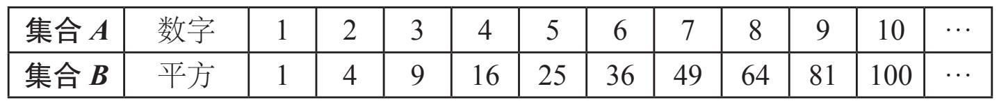
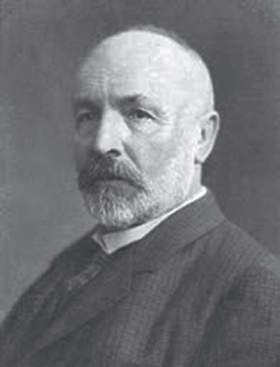
格奥尔格·康托尔
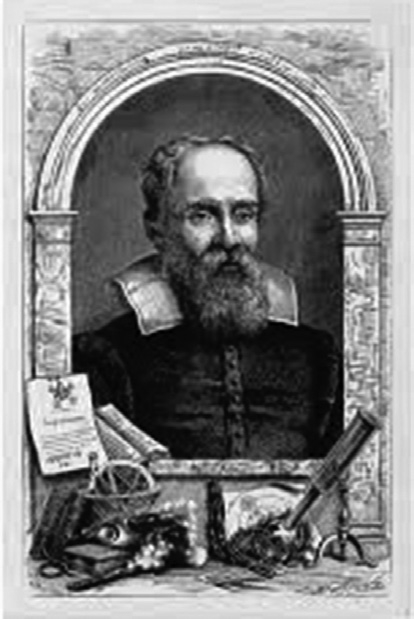
伽利略·伽利雷
定义：悖论
与人们已接受的思想相悖的推理或命题；看似自相矛盾或与常识相悖的主张或观点；那些表面语句荒谬，但实际上可能合理的论题。
多么奇妙啊，我们遇到了一个悖论！现在我们有了取得进展的希望。
——尼尔斯·玻尔
我是多么赞同尼尔斯·玻尔的此番言论！悖论是如此奇妙的东西，它使我们的思维过程发生了根本性的变化。
伽利略认为这个悖论说明在谈及无穷集时，不能使用诸如“相等”“更小”或“更大”之类的形容词，他把这个悖论写入自己的书《关于两门新科学的对话》之中。事实上，正如我们在书的前半部分所述的，对于以有限方式思考之人，最好避开任何与无限相关的问题。
但如果我们的思维方式本身是有限的呢？可为什么我们要被束缚在有限的思维模式之中呢？康托尔和戴德金试图解决这个显而易见的问题，并开创了一个新的理论。
定义：子集
若A中的每个元素都在集合B中，集合A称为集合B的一个子集。
举个例子，
设集合A={Gustav Mahler, Gustav Holst, Gustavo Dudamel}
集合B={Gustav Mahler, Gustav Klimt, Gustav Holst, Gustavo Duda mel, Gustave Doré, Gustavo Boccoli, Gustave Courbet, Hurricane Gustav, Gustaf V of Sweden}
则集合A是集合B的一个子集，因为A中每一个元素也都在B中。由定义亦可知，每个集合都是它自身的平凡子集。
下面让我们再回到伽利略悖论。首先，我们给出另外两个定义。
回顾：
定义：真子集
若集合A是集合B的子集，且与集合B不等，我们称集合A为集合B的一个真子集。如上述例子，集合A就是集合B的一个真子集。
无穷集的康托尔——戴德金定义
如果一个集合与它的至少一个真子集之间存在一一对应的关系（既是单射又是满射），那么这个集合就称为无穷集。（提醒一句，对于有限集，其任何真子集都不可能与其一一对应！）
自然数集就是一个无穷集，因为正如伽利略所证明的那样，它与其一个真子集——平方数集之间存在一一对应关系。如果用上刚才学过的术语，我们可以说自然数集和平方数集有相等的基数。值得一提的是：对于有限集，“部分总是小于整体”这一说法是成立的；但对于无穷集，这种说法并不成立。我们在前面已经考察了足够多的相关例证：伽利略悖论、芝诺学堂所提“阿喀琉斯与乌龟”故事的罗素版本（见第五讲中“芝诺的辩白”）、希尔伯特的英菲尼迪酒店里发生的各种奇迹……
动动脑筋：天堂与地狱
一个人被判处永陷地狱受苦受难，另一个人则可在天堂永生。某年某日，两人互换了位置：受苦难之人被允许感受天堂的欢愉清新；而幸福的天堂居民则得以尝尝地狱的恐怖。
从数学上讲（计算基数），这两种度过余生的方式有什么区别吗？
如果你说有区别，请解释一下原因。
如果你说没有区别，回答以下问题：你会选择在哪里度过永生？
至此，伽利略的悖论不再是悖论，它只是直接道出了自然数集为无穷集的内涵特性。很明显，我们可以找到许多其他与自然数集等势的真子集——也就是说，与它具有相等的基数。比如，素数集、偶数集、能被101整除的整数集、正整数的阶乘组成的集合{1，2，6，24，120，720，5040，40320，362880，3628800，…}，等等。
无穷集的基数
设集合D={1，2，3，4，5}。根据定义，它并不是一个无穷集。为什么呢？因为如果从D中任取一个真子集E，我们不可能找到两个集合之间的既单又满对应。换句话说，不可能把D的所有元素和E的所有元素两两配对。
如之前所述，有限集的基数就是它所含元素的数目。因此，可以写作#A=n。
但该如何表示无穷集的基数呢？我们无法数出无穷集中元素的数目！
无穷集有基数吗？
如果有，那么是否存在一些无穷基数比其他的更大呢（英菲尼迪酒店的多种访客群入住问题或多或少提示我们这是可能的）？
是否存在“最小”的无穷基数呢？
是否存在“最大”的无穷基数呢？无穷基数是不是就是“无穷大”呢？如果是，我们该如何表示这样的基数值呢？
想知道这些及其他相关问题的答案，请往下阅读！
可列无穷集莅临希尔伯特酒店
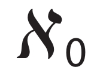
显然，每个有限集的元素都是可以数出来的。您从第一个元素开始数，然后第二个元素，继续下去，在某个时候（即使它含有元素的数目达到古戈尔普勒克斯），您（或您的后人）终将数完最后一个元素。类似，一个无穷集被称为“可列集”，它与自然数集具有相等的基数，表明它与自然数集之间存在既单又满的对应关系。换句话说，该集合的元素可以按顺序一一排列，因此所有元素可以在希尔伯特酒店以某种方式全部入住。集合是可列的，正因我们可以一个一个地列出所有的元素：第一个元素、第二个元素、第三个元素……，尽管这个过程永远不会结束，但还是可以一一列清楚的！因此，我们使用“可列的”这个词描述这类集合。
在上一讲里，我们已经读到，把整数集和有理数集中的元素安置进希尔伯特的酒店是完全没有问题的。这就意味着这两个集合无疑都是可列的。
回顾一下有理数集的入住安排。当时，我们为每个有理数设定了一个“高度值”，并以之来确定每个有理数的楼层。其中分数a/b的“高度值”定义为h=a+b。具有相同高度值的分数，则根据分子的大小递增排列（详见下表）。显见，此表说明从有理数集到自然数集存在一个单射对应。
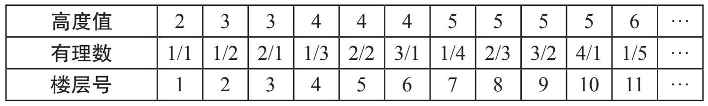
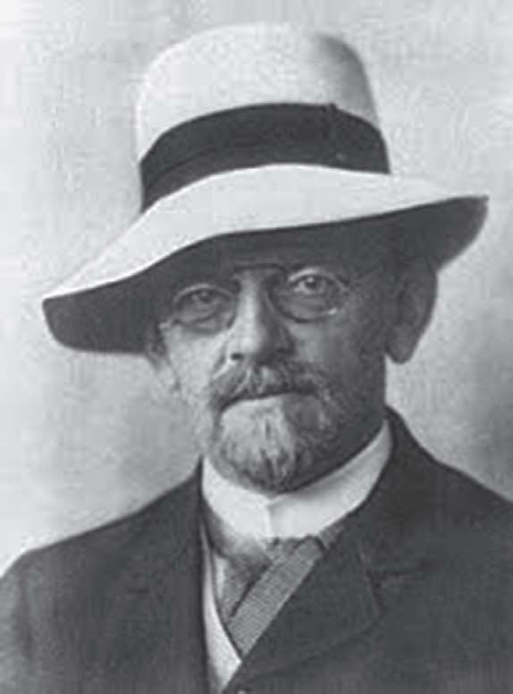
大卫·希尔伯特
艾米·诺特
在下方的楼层分配表中，我们回顾一下所有的整数是如何被安置进这个宇宙中最奢华的数学酒店的：
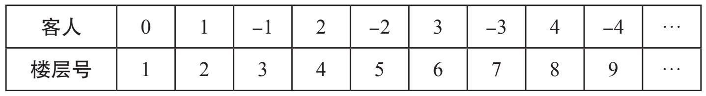
对于有限集的基数，我们用记号#A表示。但是，由于无法完成无穷集的计数，所以没有哪个自然数“n”可以描述其基数。因此，一个可列无穷集的基数必须用其他方式表示。康托尔引入了符号0（读作“阿列夫零”）。它是希伯来字母“”，带上下标0组成。[1]设N表示自然数集合，Z表示整数集合（所有正的与负的整数以及0），那么则可以写#N=0和#Z=0。
用符号0来表示可列集的基数，意味着0可能是最小的无穷基数，也意味着可能会有更大的基数。（那些集合，我们根本无从计数！）事实上，确实如此。
动动脑筋
请证明：每一个无穷集都包含有一个可列无穷集。
这个练习说明，一个无穷集只是可能可以填满希尔伯特的酒店。这句话，重点在“可能”二字。
例如，能被3整除的所有正整数都可以被安置在酒店中，只要让每个数住进与自己相同号码的楼层，其他楼层都空着即可。
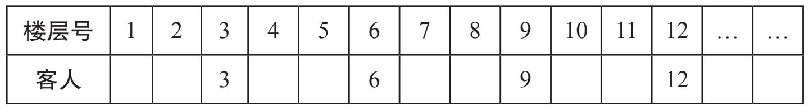
这样，酒店还有很多的空房。
但是，如果把每个数都安置到房间号为自身1/3值的房间，那么酒店将被这个集合填满。
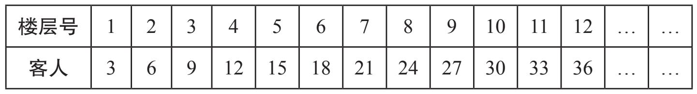
这表明能被3整除的正整数集构成一个可列无穷集（因为此集与自然数集之间存在一个双射对应，正如上表所示）。
能被古戈尔普勒克斯整除的正整数同样构成一个无穷集，也是可列的，能被维尼普勒克斯整除的正整数数集亦然。不妨感受一下，从1开始，我们需要数多少个数才能数到维尼普勒克斯啊！然后，我们必须再经历一遍这个漫长的过程，才能数到2倍的维尼普勒克斯！但是，它们仍然还是有限的。而能被维尼普勒克斯整除的正整数数集的基数等于能被21整除的正整数数集的基数，也等于偶数集的基数，它们皆等于自然数集的基数。
所有这些集合的基数都是0。
信不信由你！
我们苍白的推理使我们无法揭示无穷的奥秘。
——吉姆·莫里森，大门乐队
代数数莅临希尔伯特酒店
我们对希尔伯特酒店各种入住情况的考察表明，尽管这是一个拥有无穷多房间的酒店，但并非所有的数集都能被整体安置进酒店。由于0和1之间有太多的数字，以至于他们不能同时入住。
这些数集不是可列集，因为它们与自然数集之间并不存在既单又满的对应关系。是否还有其他数集也是无穷的但非可列的呢？也就是说，是连希尔伯特酒店都不能容纳的呢？
有一个此类有趣的例子，即非代数数集合，我们稍后将定义之。但首先，我们必须清楚什么是代数数。
大家知道，有理数q可以写成两个整数c和d的比值
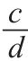
的形式。换句话说，我们可以把q定义为一个有理数，当且仅当它是一个“一次”方程的解，也就是形如ax+b=0形式的方程的根，其中系数a和b是整数。
很明显，每一个有理数
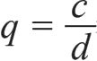
都满足关系式dq–c=0，因此是一次方程dx+（–c）=0的一个解。例如，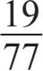
是方程77x–19=0的解。那么，到底何为代数数呢？定义：代数数
如果一个数是一个形如：
anxn+an-1xn-1+…+a1x+a0=0的方程的根（即解），则称它为代数数。其中，每个ak都是整数。
一个数若不是代数数，则被称为“超越数”。
上面的方程中，若首项系数an不为0，则称等号的左边为一个n次多项式。
由此定义，显见所有的有理数都是代数数。然而，有一些代数数是无理数[2]。例如：
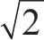
是一个代数数，因为它满足二次方程x2-2=0的根。3/2的三次方根
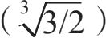
是一个代数数，因为它满足三次方程2x3-3=0的根。虚根
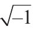
=i是一个代数数（但不是实数），因为它满足二次方程x2+1=0。黄金分割比ϕ是一个代数数，因为它满足二次方程x2-x-1=0的根。
简而言之，因为有“大量的”多项式anxn+an-1xn-1+…+a1x+a0，所以也存在“大量的”代数数。
基于以上，下一个命题可能看起来有点令人惊讶：
定理：全体代数数构成一个可列集。
证明：让我们考察一下方程
anxn+an-1xn-1+…+a1x+a0=0
不妨设首项系数an为正。若否，我们将方程两边乘以（–1），方程的根不变。
类似于之前安顿有理数入住酒店的方法，为每个多项式定义一个高度值H：
H=n+an+|an-1|+|an-2|+…+|a1|+|a0|
（符号||表示一个数取绝对值。如果这个数是正数，它的绝对值就等于它本身，如|37|=37。如果这个数是负数，则其绝对值是其相反数，如|-234|=234。）
现在，我们可以按照高度值的大小顺序排列所有的多项式方程（有些方程可能无解）。
例如，对于高度值H=1只对应1个多项式，即多项式1，它与变量x无关，由它得到的多项式方程为1=0，方程无解。这是一个矛盾方程，也没有给出任何代数数的解。
对于高度值H=2，有2个方程：x=0和2=0。第一个方程有代数数解0，第二个方程也是一个矛盾方程，没有根。
对于高度值H=3，有5个方程：3=0，x-1=0，2x=0，x+1=0和x2=0。所有这些方程中，第一个方程是矛盾方程，无根；其他方程，除了之前得到的代数数0，只增加了两个新的代数数：1和-1。
到此，我希望读者已清楚大致思路。
当高度值H=5时，我们得到代数数
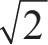
（请读者自行构造相应方程）。对于每个给定的高度值，都有有限多个方程满足该值，而每个方程都只有有限多个解。因此，对每个高度值，都只能添加有限多个新的代数数。这表明代数数集实际上是可列有限集的并集。因此，在希尔伯特酒店中容纳所有的代数数是没有问题的。这也意味着代数数集合是一个可列集，其基数为0。这已是相当难以置信的，而能被维尼普勒克斯的维尼普勒克斯次方整除的正整数集与代数数集有一致的基数。
0：一个更大的无穷大——连续基数
证明一个集合是可列的并不困难。只需要找到这个集合与自然数集之间的一个既单又满的对应关系即可。现在问题的核心在于：为了证明一个集合是可列的，只要证明它的所有元素可以按某种顺序一一被排列出来，因此，为了证明一个集合是不可数的，我们必须证明绝对没有办法按某种顺序一一排列其所有元素。（这类似于证明房间里至少有一只蚂蚁的“问题”，与房间里绝对没有蚂蚁的“问题”。一旦找到了一只蚂蚁，你就证明了前一个命题，但在某一特定时刻还没有找到一只蚂蚁并不意味着你以后也找不到。）
如前所述，1891年，格奥尔格·康托尔提出了一种被后人称为“康托尔的对角线论证法”的复杂方法，此法可以帮助证明，对元素达到一定数量的集合排列的方法已经无效。上一讲中，芬克尔斯坦·奥斯特洛夫斯基·坎托罗维奇教授证明希尔伯特酒店无法容纳0和1之间所有只用0和1生成的无穷小数时，已经用到这种方法。此法可以巧妙地证明，0和1之间所有数构成的集合是不可数的。（读者可以尝试证明之！）这其实不难预料，因为“在0和1之间只用0和1生成的十进制无穷小数”构成0和1之间所有数这一数集的一个真子集。此外，如果我们用二进制表示所有0和1之间的数，可能很容易相信这两个集合的基数是相等的。（为什么呢？）
毫无疑问，元素不能一一排列清楚的集合是不可数的。数轴上，0和1之间的所有数构成一个不可数集，所以其基数不是0。因此，为了表示实数集（或实数轴上任何线段）的基数，我们需要引入一个新符号！为此，我们使用符号，称
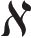
为连续基数。但是请注意，不可数集的基数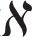
还不一定就是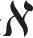
。字串、字串、字串
由于康托尔的对角线论证法既美妙又重要，我将再多做些解释，此次我将展示，为什么只用字母a和b组成的无穷长字串集合是不能排列的。也就是说，这个集合是不可数的。
如果你已经理解了芬克尔斯坦·奥斯特洛夫斯基·坎托罗维奇教授对欧米茄就0和1之间所有的十进制小数无法同时入住酒店的解释，那么你应该就已经懂了。两者的思路是完全一样的，只是例子不同而已。如果你没有完全理解他的解释，那希望这次你能理解。
我们将用反证法，也就是说我们将假设结论不真：所有的字串可以按顺序一一排列。然后我们会发现这将导致一个矛盾，从而说明之前的假设是错误的。
以下是字串的排列表：
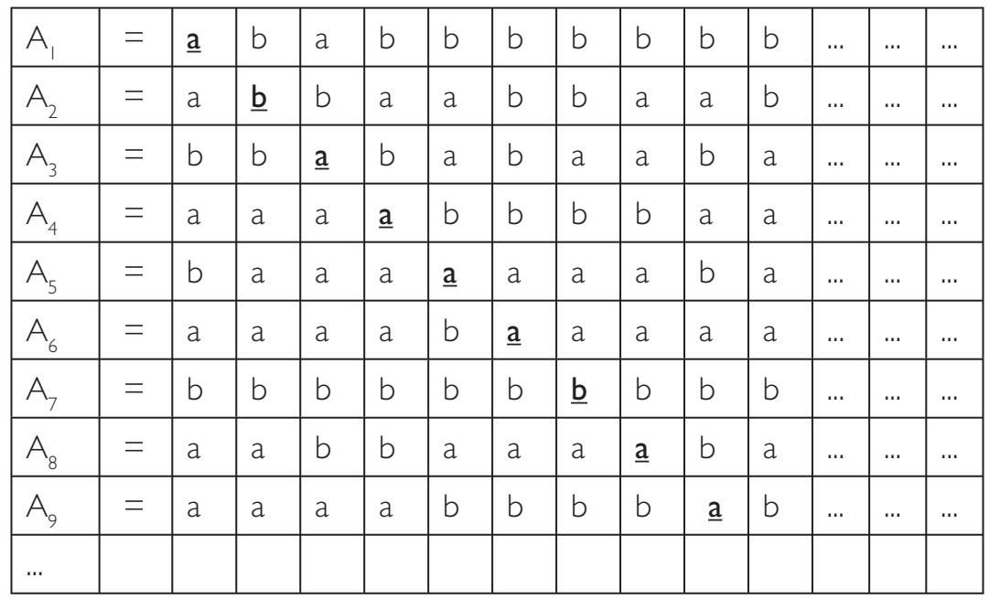
基于康托尔的对角线论证法，就像之前处理0和1之间的小数一样，我们将构造一个字串A0，但无论如何排列由a和b生成的字串，A0都未列于上表中。请仔细观察上表，注意对角线上加粗的字母。构造字串A0的方法如下：第一个字母取与A1的第一个字母不同的字母（A1的第一个字母是a，所以我们用b）；第二个字母取与A2中的第二个字母不同的字母（A2的第二个字母是b，所以我们用a）；第三个字母亦与A3的第三个字母不同（这次我们用b）；依此继续。
最后，得到一个新的字串：A0=babbbbabb…
关于A0出现在上表中（也就是说，是表中的某个字串）的不可能性证明，留给聪明的读者，请注意它与表中任何一个字串Ai比较，至少与Ai在第i位的字母不同。
那么，如欧米茄醒悟的那般，把A0添加进上表并不能改变集合的基数，因为我们总是能重复上述构造过程，并找到另一个新的字串，姑且称它为
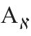
，这个字串将不同于新列表中任何一个字串。综上所述，只用字母a和b组成的无穷长字串集合具有连续基数。显然，由3个不同的字母（不只是a和b）或4个或5个（或任何其他数字多个）字母组成的无穷长字串的集合也具有不可数的基数，当然这并不意味着它们具有连续基数。但我们可以构造这类集合与0和1生成的数字串之间既单又满的对应关系，可知其基数事实上均为
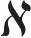
。线段[0，1]上的数构成不可数集的另一趣证
假设不真：线段[0，1]上的点构成一个可列集。这意味着，其中的元素可以以某种方式按顺序一一排列，如{p1,p2,p3,p4,…}。为了证明（或推翻）这一假设，我们首先取一列小区间：以p1为中心，取长度为1/10的小区间，以p2为中心，取长度为1/100的小区间，以p3为中心，取长度为1/ 1000的小区间，以此类推。由于线段[0，1]中的每个点都至少位于这些区间中的一个（根据假设，{p1,p2,p3,p4,…}是0到1之间所有数的一个排列），我们最终得到[0，1]间的一个覆盖。另一方面，我们可以把所有这些小区间的长度加起来。根据几何级数求和公式：
a1+a1q+a1q2+…=a1/（1-q）
可得1/10+1/100+1/1000+1/10000+…=（1/10）/（1–1/10）=1/9。
这样，我们用总长度仅为1/9的区间列覆盖了线段[0，1]上的所有点。然而，这显然是不可能的，因为线段[0，1]的长度是1。
我们就此得到了矛盾。
结论：不可能把0和1之间的所有数一一排列。换句话说，这个集合是不可数的。
由于有理数构成一个可列集，所以可以将线段[0，1]上的所有有理数按顺序一一排列。然后，用总长度不超过1/9的区间列覆盖这些有理点，这意味着有理数最多只占0到1之间所有数的1/9。
然而，我们可以改进这个区间列长度的上界。
假设线段[0，1]上有理数可排列为{q1,q2,q3,q4,…}。取长度为1/1000的小区间覆盖q1点，长度为1/10000的小区间覆盖q2点，长度为1/100000的小区间覆盖q3点，依此类推。所有这些小区间的总长度等于
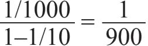
。显然，我们可以继续缩减覆盖[0，1]上所有有理数的小区间列的总长度，使其尽可能小。一个集合如果能被一列区间覆盖，且区间列的总长度可小于预先给定的任意正值，我们称此集合为零测集。
所有的真理，一旦被发现都很容易理解；关键是如何发现它们。
——伽利略
数学是人类精神最美丽最强大的创造。
——斯特凡·巴拿赫
不是搞笑吗？这些集合的基数竟无差异
正如我已经提到的，0和1之间的所有实数——有理数和无理数的基数为，它被称为连续基数。从0到1的这个线段的长度是一个单位，基数为。其实易见，任何两个线段都是相对应的，也就是说，任何线段AB与另一线段CD，都存在元素之间的既单又满对应关系。下图给出一点提示。
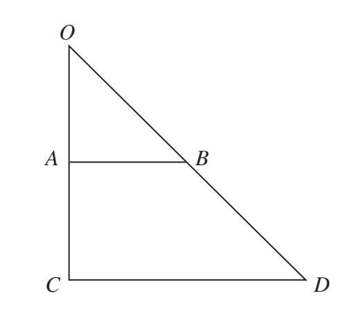
还没看出这个对应关系吗？下面我来具体解释一下。对于线段AB上的任意点，我们都可以在线段CD上找到对应的点，如下图所示。
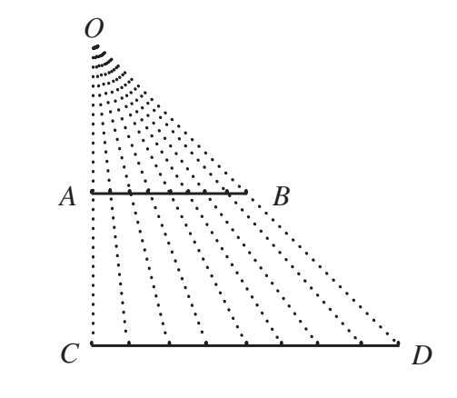
显然，较短线段AB上的每个点都可以投射到线段CD的不同点上，此为一个一对一的映射关系。
同样，亦显见线段CD的每一个点也可以在线段AB上找到一个对应的点。（只需要从线段CD上的点到三角形的顶点连一条线，其与线段AB的交点即为所求的对应点。）这是一个满射。
既然我们已经能成功地将两条长度不同线段上的点两两配对，这就说明它们具有相等的基数——也就是连续基数
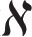
。还有更奇怪的事情。我可以（以类似的方式）证明：有限长的线段与无穷长的射线具有相等的基数。我在下图给出提示，请仔细看图思考，我相信你会找到两个点集之间的对应关系。
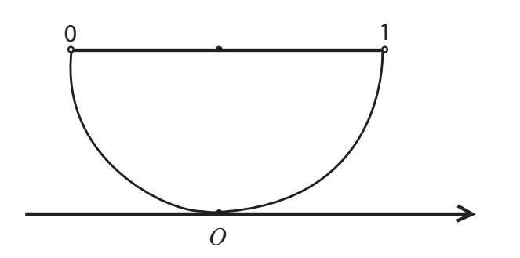
这意味着，一条长度为1毫米的线段与一条长度为10亿千米的线段，甚至一条无穷长的线段都有“一样多的点”。如果我们回想一下，事实上一个点没有长度、没有面积也没有体积，那么这个结果似乎就不那么令人吃惊了。芝诺也许会问，这些“无长度”的点是如何形成一条长度为正值（比如107）的线段的，甚至是形成一条无穷长的射线的。
从直线、射线和线段出发，康托尔还证明了线段上的点与正方形甚至是立方体内的点之间存在一一对应关系！
但更令人震惊和印象深刻的是：康托尔还证明了直线和n维空间之间是一一对应的（这里，对于所有正整数n成立）！
我要告诉你一件事：这个发现对康托尔本人来说也是极其不可思议的。他自己评论说：“我发现了，但我无法相信！”
另类集合
给出代数数的概念后，我们定义了不是代数数的数为超越数。基于实数集的基数高于代数数集合的基数，这自然意味着超越数是存在的，也就是说确实存在一些数，不是形如anxn+an-1xn-1+…+a1x+a0=0多项式方程的根。
但是，超越数在哪儿呢？尽管超越数的概念已经提出了很长时间，可直到19世纪，仍没有人真的“看到”过一个。
超越数存在性的证明并非出自格奥尔格·康托尔之手。1844年，法国著名数学家约瑟夫·刘维尔证明了这一点。然而，康托尔改进了刘维尔的工作，证明了绝大多数实数是超越数。（换句话说，不仅大多数实数不是有理数，甚至连代数数都不是。）
定理：全体超越数构成一个不可列集。
证明：实数集可分为两个不相交的子集合——代数数集合和超越数集合。（此处，“相交”的意思是某个实数既是代数数，又是超越数。）
记全体代数数构成的集合为“A”，全体超越数构成的集合为“T”，全体实数的集合为“R”。
定义：
两个集合A与B的并集，其元素或属于A，或属于B，记作A∪B。
代数数集A与超越数集T的并集即为实数集。因此，可以写为R=A∪T。
问题的关键在于：实数集R的基数为
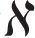
，因此得出T必为不可数集（或更小基数）的结论并非令人难以置信。超越数集T是不可数集，是因为任何两个可列集的并集必然还是可列集。
如果A和T均为可列集，也就是说代数数和超越数均是可以一一排列的，那么设它们的一个排列是A=（a1,a2,a3,…）和T=（t1,t2,t3,…）。进而，它们的并集T∪A也是可列集，因为并集中的元素可以一一排列如下：
T∪A=（a1,t1,a2,t2,a3,t3,…）
然而，R是不可数集。且我们已知A为可列集（参见上面的“代数数莅临希尔伯特酒店”一节）以及T∪A=R，这些说明T不可能也是可列集。
既然超越数的数量如此之大以至于它们构成不可数集，我们似乎可以毫不费力地找到一个超越数的例子。数学家们应该能找到大量的超越数才对。
事实真是如此吗？并不是，只有极少量的超越数被确定出来！
让我们试一试，比如，（
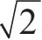
+Ø）是不是超越数呢？并不是，这个数是代数数——读者可以尝试找一个（整系数）多项式方程，以此数为一个解。我支持大家寻找超越数的任何尝试。那我们现在已知了什么呢？我们证明了超越数不仅有无穷多个，而且是不可数之多。但问题是，这是一个存在性的证明，并不是一个构造性的证明。换句话说，虽然证明可能使我们相信存在无穷多的超越数（甚至达到连续统的基数），但这对找出超越数并没有给出任何信息。
如之前提到的，1844年，刘维尔终于找到了一个超越数，即
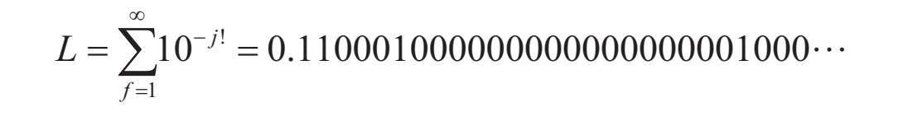
你可能不清楚这个数到底是多少，让我来解释一下。
刘维尔数的构造如下。
第一步：计算所有的阶乘：1!=1，2!=2，3!=6，4!=24，5!=120，…
第二步：构造一个十进制小数，小数点后仅出现数字0或1，数字1在第1、2、6、24、120、…位，其他位置均为数字0。
刘维尔证明了这个数不是任何整系数多项式的根。
可以想象，这个证明绝不简单，所以你只要相信我（或刘维尔），认定此数为超越数即可。
让我们考察下一个数字3.140001000000000000000005…，此数也是以类似的方式构造的。这个数是把π的十进制形式中除了第1、2、6、24、120、…位之外其他位置上的数全换成0得到的。（未作改变的这些位置的序号其实分别对应阶乘1！，2！，3！，…。）在这些未作改变的位置，原来π中的每个数字被一个接一个地写出来。
（π=3.141592653589793…，我们是把原来小数点后的5写在了第24位，把原来小数点后的9写在了第120位，原来的2写在第720位，等等。）
数学家们可以证明这也是一个超越数（同样，你只需相信他们即可）。
但π本身呢？是否也是超越数呢？
π：我不是有理数
你永远无法想象我的下一位是什么……
π其实是无理数（也就是说，没有哪个分数a/b会等于π），这已是大家周知的了——但其实直到19世纪，才由波斯数学家、天文学家、地理学家穆罕默德·伊本·穆萨·花拉子密证明之［花拉子密的拉丁文译名为“Algoritmi”，源于“算法（algorithm）”一词］。他在代数领域做出了许多极其重要的贡献，现在使用的“代数（algebra）”一词就来自阿拉伯文的拉丁文转写“al-jabr”，这个词出现在花拉子密于820年写的代数方面的开创性巨著的标题中。
犹太神学家、哲学家迈蒙尼德也表示相信——但没有证明π是无理数。直到1768年，瑞士数学家约翰·海因里希·兰伯特才对此给出了正式的证明。（欧拉并不是唯一一位给出这个证明的数学家！）
证明π是一个无理数相对简单些，但证明π是超越数极其复杂艰难。数学家们花了100多年的时间探索这个问题，直到德国数学家费迪南·冯·林德曼于1882年最终给出证明——π不是任何整系数多项式方程的根。
1873年，法国数学家（你注意到我们提到过多少法国数学家了吗）查尔斯·厄米特证明了欧拉常数e是一个超越数。[3]证明一个数是超越数（特别是证明π是超越数）是一个特别漫长而复杂的过程，在此书中我们不会深入探讨这些证明。一般来说，仅仅设想一下去证明一个数不能满足任何形如anxn+an-1xn-1+…+a1x+a0=0的整系数多项式方程就绝非易事！
有多难呢？你要知道，直到目前数学家们还没有确定π的π次方幂（ππ）是代数数还是超越数。大卫·希尔伯特（他正是非凡的英菲尼迪酒店的“大老板”）曾不解
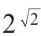
是代数数还是超越数。如今，我们已经知道这个数是超越数。其证明含于一个叫作格尔丰德-施奈德定理的一般性结论之中。根据这个定理，如果a是一个非0或1的代数数，b是一个无理数且为代数数，那么ab就是超越数。运用这个定理，我们可以推断出e的π次方幂（eπ）是超越数，因为eπ=eiπ（-i）=（–1）-i。此数中，a的位置上是（–1），是一个非0或1的代数数；b的位置上是（–i），既是代数数（i是方程x2+1=0的根）也是无理数。
这个奇妙的定理是在1934年和1935年由俄罗斯数学家亚历山大·格尔丰德和德国数学家西奥多·施奈德分别独立证明的。希尔伯特于1900年在巴黎索邦大学召开的国际数学家大会上提出的23个悬而未决的重要数学问题中，格尔丰德-施奈德定理为第7个问题的第二部分提供了解答。
这样，我们知道了和eπ是超越数。还有无穷多个超越数有待我们发现。
连续统假设与缺失的公理
到此，我们已经清楚实数集的基数严格大于自然数集的基数。但是到底大了多少呢？为什么用符号表示呢？为何不把实数集的基数记为1，这样不更像一个在0之后的基数符号吗？
正如我们之前所述，一个集合是不可数集并不意味着其基数一定是
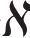
。这自然导出一个问题：是否存在一个集合，其基数严格大于0且严格小于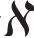
？正是格奥尔格·康托尔在1877年提出了这个问题。在数学领域中，提出问题的艺术注定比解答此问题更有价值。
——格奥尔格·康托尔
康托尔的观点是不存在这样的集合，其基数严格大于0且严格小于
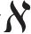
。换句话说，他设定实数集的基数就是1，这个假设被称为连续统假设。连续统假设（CH）
不存在一个集合的基数严格大于整数集的基数0，且严格小于实数集的基数
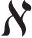
。经过多年的不懈努力，数学家们还是未能验证这个假设命题的真伪。它被列为希尔伯特23个重要数学问题的第一个。
为了后面更好地理解连续统假设的解决这一历史性事件，我们先回溯一下当时的几何领域发生了些什么。大多数几何学都是基于欧几里得于2000多年前建立的一套公理体系（又名公设），这些公理现在仍然适用于“一般的”几何学理论。虽然公设历史悠久，但其实对于欧几里得第五公设——“平行线公设”，一直存在一个悬而未决的问题。根据这个假设，过直线m外一点A，有且恰有一条直线平行于给定直线m。（这是18世纪苏格兰数学家约翰·普莱费尔对欧几里得第五公设描述的版本。欧几里得的版本涉及角度和，但没有提到“平行”这个词。）问题：第五个公设能否从其他4个公设中推导出来？换句话说，这个公设是否是多余？事实证明，这个公设是必要的，也就是说它不能用其他的公设推导出来。这个想法可能启发了数学家们去研究连续统假设与集合论的各个公理是如何相关的，最终关于公理的论述影响了集合论的发展。
多年来，人们越来越清楚地认识到，关于无穷大的问题非常接近数学理论的根基，对它们的处理应该极其谨慎。
1908年，一套被称为泽梅罗–弗伦克尔系统（ZF）的公理体系被提了出来。我们在第六讲中其实已经提到过这位泽梅罗（正是为康托尔辩护并提出了博弈论第一个定理之人）；阿夫拉罕·哈勒维·弗伦克尔是以色列数学家，曾担任耶路撒冷希伯来大学数学学院的首任院长。二人提出这一公理体系，目的是为集合论和其他数学理论建立一个坚实的理论基础，数学家们以此可以处理无穷集的基数等概念，并规避一些问题，譬如罗素悖论。ZF公理体系只是公理化集合论而涉及的一些非常基本的陈述，我们相信（是的，在我们的心中）这些公理是不言而喻的，足以被认为是理所当然的。例如，“空集公理”：
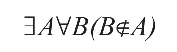
即“存在一个集合，不含任何元素”。
人们期许泽梅罗-弗伦克尔公理体系之于集合论就等同于欧几里得公理体系之于几何学。然而，这止于期许。
1938年，奥地利逻辑学家、数学家和哲学家库尔特·哥德尔证明了，连续统假设不可能在ZF公理体系下被证明为假命题。25年后的1963年，斯坦福大学数学教授保罗·科恩证明，连续统假设不能用ZF公理加以证明。科恩和哥德尔两人共同证明了连续统假设既不能被证明为真，也不能被证明为假。其结果是连续统假设不能仅用ZF公理体系来判定真伪。这是第一个“无法判定的”命题。
在古老的欧几里得世界里，亚里士多德的逻辑学认为所有命题只有两种情况：真的（T）和假的（F）。而现在，我们发现还有第三种：不可判定的（U）。
人们可能会问，之所以会无法判定，是不是因为ZF公理系统中缺失了一些公理？也许存在另一个“显然正确”而未被发现的公理，把它添入ZF公理体系之后，我们就能够证明连续统假设了[4]。更乐观的想法是，是否可以在ZF公理系统中再额外增加一些公理，从而可以判定所有命题的真伪？
1931年，年仅25岁的哥德尔提出了3个定理：一个完备性定理和两个不完备性定理。简单来说，第一个不完备性定理表明：任何一个公理系统，只要蕴含自然数集，就存在一个不可判定的命题。这个定理对于热衷于数学公理化的数学家而言，无疑是一道晴天霹雳。
这3个定理震惊了整个数学界，直到今天人们仍然在争论其核心要义。这些具有划时代意义的结论自然值得人们深入研究。
50多年来，致力于公理化集合论的数学家们一直在努力寻找那所谓的“缺失的公理”，他们都以失败告终。今天，大多数专家学者认为，并没有公理被遗漏了；而与其纠结于此，不如去研究不同公理之间的相互关联。当然，我们也可以直接把连续统假设视为公理，但需注意公理必须得是其正确性易见的命题，而连续统假设肯定不是。
2006年（保罗·科恩逝世前一年），在维也纳举行的哥德尔纪念大会上，保罗·科恩做了一场关于连续统假设的精彩演讲。演讲视频（分为6部分）可以在互联网上找到。
与此同时，在几何学领域，从欧几里得公理系统的前4个公设来推导第五个公设的尝试失败后，一些有趣的理论油然而生，给予数学家们以新的思路。19世纪，两种新的几何体系被提了出来，它们被称为非欧几里得几何。第一种（双曲几何）设定过直线m外一点A至少存在两条直线和已知直线m不相交。第二种（椭圆几何）设定过直线m外一点A，不能做直线和已知直线m不交。
类似于新的非欧氏几何理论被引入几何学以替代欧氏几何中的第五公设，连续统假设也被一些新的理论所替代，进而使非康托尔集合论得以发展，在这些新的集合理论中连续统假设并未被设定。坦率来说，存在许多非康托尔理论。因为近年来数学家们利用保罗·科恩提出的系统的“力迫法”，已经证明了许多经典的未解决的公开问题其实都是不可证明的。
在过去，人们认同这样的想法：只要足够聪明的数学家愿意花足够长的时间研究数学，任何数学命题都可以被证明或被证伪。而哥德尔定理表明，有些命题既不可证其正确也不可证其错误。事实上，它们是无法判定的。
数学可以被定义为这样一门学科，我们永远不知道其中所说的是什么，也不知道所说的内容是否正确。
——伯特兰·罗素
理查德悖论（关于大部分事物，我们无可言说）
我们将要讨论的这个悖论是以法国数学家朱尔斯·理查德（1882-1956）的名字命名的，并于1905年发表。下面，我简单（不是用专业名词）来描述这个悖论。
“一个实数，它的整数部分是42，小数点后奇数位置是0，偶数位置是1”，这段话就能准确定义数42.0101010101…同样，“一个数，自乘3次后等于7”也能准确定义数
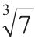
。理查德提出：用E来记所有能用片语（有限个词）表达的实数之集合。毫无疑问，这个集合是可列的（因为我们可以根据片语中词的数量来排列这些数），而对于单词数量相等的片语，可以按照字母顺序来排列。再利用康托尔的对角线论证法，构造一个不在原数列中的新数。然而，这个数字仍然可以用含有限数量单词的片语来定义。因此，新构造的数一方面不在集合E中，但另一方面又应该是集合E中的元素。
此为一悖论。
解决此悖论的一种方法是指出“不能用有限个单词来定义的数这个属性”不是一个可以用数学语言定义的性质。让我们从另一个角度来观察这个悖论。我们假设英语词典里只有5个单词，例如：“boy”“coy”“joy”“soy”和“toy”。有了这样的限制，我们会发现我们不可能讨论任何需要使用超过这5个词的话题。例如，我们不能讨论连续统假设，当然也不能讨论不同物理理论之间可能存在的矛盾。
每一个符号逻辑系统（包括数学）都由一系列公式组成。这里的“公式”一词并不局限于数学意义上相对狭义的概念。我们可以在更广泛的意义上理解这个概念：一个符号、词、表达式、短语、定义式——借助于它就能表达任何事物。因为这些公式和自然数之间有一一对应关系，进而所有公式构成基数为0的集合。真若如此，那怎么讨论实数集呢？要知道实数集的基数大于0。所以结论只能是，一定存在不能用公式描述的实数。
此时值得一提的是，美国数学家、哲学家查尔斯·皮尔士，他独立于康托尔也发现了，不可能在自然数集和实数集之间找到一一对应关系。然而与康托尔不同的是，皮尔士并没有深入探究下去。相反，他认为实数理论并未成熟，故去研究它无太大意义。
对于不可言说之物，必须保持沉默。
可计算数
——路德维希·维特根斯坦
定义
一个实数被称为可计算数，即它通过某种（有限）算法计算得到的十进制小数的估计值可与该实数逼近到任意期望的精度。
有理数是可以计算的，因为它们的十进制形式的小数部分是有限的或者是无穷且循环的，可以通过简单的除法运算得到。
数0.232233222333222…也是可计算的，因为我们可以轻松找到算法，计算结果可精确到小数点后任意位。（注意：这个数字是无理数！也许你会愿意证明这一点。）
代数数也是可计算的，因为有多种方法可以求解形如anxn+an-1xn-1+…+a1x+a0=0的方程，得到任意精度的根。
还有另外一些上面未提及的数，但它们也是可计算的，其中两个是π和e。
π是什么？
无理数π可表达为无穷不循环十进制小数，没有一个代数公式可以计算出此数。不过，π仍旧是可计算的。
阿基米德早已经意识到存在一种算法，它可以求得π的十进制形式的近似值且可任意提高结果的精度。（此法基于计算圆内接n边正多边形的周长。当n趋于无穷时，多边形在形状上趋于圆形。）
1593年，法国数学家弗朗索瓦·维特用一组嵌套根式[5]给出了一个奇妙的公式来计算π。
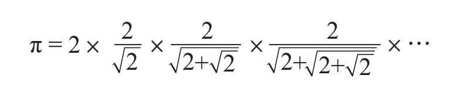
此公式除了独特的内在之美外，还展示了一些非常重要的东西，那就是结尾的省略号，其意思是“无穷地继续这个过程”。你可能不相信，但这是人们第一次把无穷过程用数学公式清楚地表达出来。
这让我想起，据说路德维希·维特根斯坦在他的演讲中曾要求听众想象一个人边走边背诵“……，5，1，4，1，点，3——完成”。当此人被问及他之前在做什么时，他回答说，他刚刚把π的十进制小数形式从尾到头倒背了一遍。他从遥远的无穷过去开始这件事，一直忙到了现在。这个故事似乎比说“某人决定坐下来，从头到尾写出π的十进制小数形式，持续工作到遥远的无穷未来”更荒谬。但其实有何不同呢？
回到π。除了阿基米德和维特，还有许多其他数学家致力于计算π值，这些工作的结果最终都是以无穷级数或无穷连乘积的形式呈现的。1650年，英国数学家约翰·沃利斯发现了下面的公式：
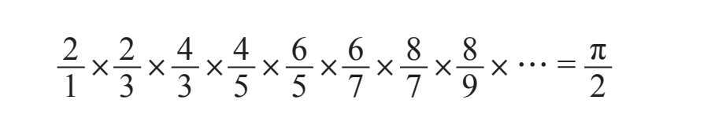
把上式左侧相邻两项两两配对相乘，可以将公式改写为：
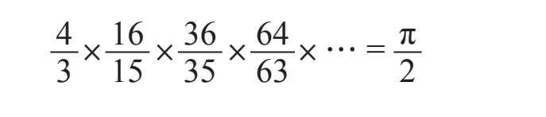
这个含有无穷多项乘数的等式，确实可以展示π的小数点后面越来越多的精确数字。
值得一提的是，在1665年约翰·沃利斯第一个使用了符号∞（他在二次曲线的面积计算中使用了1/∞）。
苏格兰数学家、天文学家詹姆斯·格雷戈里在1671年，提出了一个不同的公式——以无穷求和的形式来表达π：
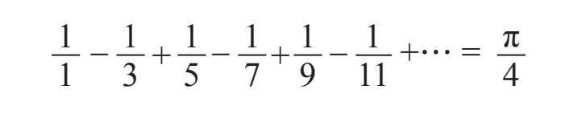
多么美丽的公式啊！简单，优雅，过目难忘。
然而，不得不指出来，此公式真正的提出者，目前大家公认的是14世纪印度数学家玛德哈瓦，他应该是早在格雷戈里之前就洞悉了此公式。一些学者认为玛德哈瓦不仅提出了此公式，甚至还找到了一种方法计算其与π的精确值之间的误差，更提出了另一个更快逼近π的公式，也就是下面这个公式：
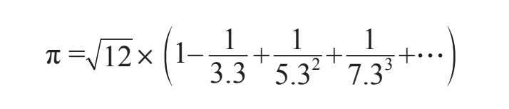
老实说，在此部分我确想抓住机会向大家展示一些特别优美的公式来计算π。其实，其中任何一个公式都足以说明π是一个可计算数。
e是什么？
欧拉常数e也不是一个代数数，但因为它被定义为一个数列的极限，所以e也是可计算的。类似于π，数学家们也找到了许多的方法来计算其精确值。下面是一些漂亮且相对简单的例子，您可能对前两个是比较熟悉的：
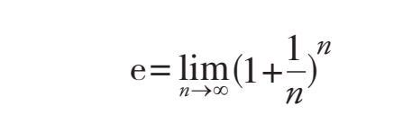
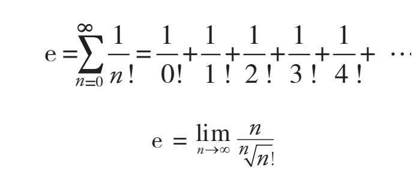
因此，人在自然界中到底是什么呢？对无穷而言的虚无，对虚无而言的全体，抑或是无和全之间的一个折中，他距离理解这两个极端都是无穷之远。
——布莱斯·帕斯卡
不可计算数
是否存在一些实数是不可计算的呢？不仅存在，而且有很多。事实上，正如我们之前指出的，算法有可列多种，所以可计算数的基数必然是0。而实数集的基数为，这就意味着不可计算的实数，其基数须为！换句话说，绝大部分实数都是不可计算的。大部分的实数是找不到算法来完美地定义其值的。那么，我们可否讨论这些不可计算数呢？能否找到一个不可计算数的例子呢？
有些数学家认为没有必要算清全体实数，而且从实用的角度考虑，仅可计算数就完全够用了。
对于那些想要了解更多（非常多）可计算数和它们与阿兰·图灵提出的一些概念之间的美妙联系的人而言，我强烈推荐阅读英国数学家、哲学家，获得过无数（也许可以说是“无穷”）奖项和头衔的罗杰·彭罗斯爵士的书：《皇帝新脑：有关计算机、人脑及物理定律》。
无穷延伸的不可能形状
与父亲列昂尼德·彭罗斯合作，罗杰·彭罗斯爵士设计了许多不可能的形状，并把它们送给了荷兰艺术家莫里茨·科内利斯·埃舍尔（《哥德尔、艾舍尔、巴赫：集异璧之大成》一书的主角之一），后者将它们用在了自己的版画作品中。其中最著名的两幅画[6]如下所示：
彭罗斯三角形

彭罗斯阶梯——一个永无止境的旅程
想象一下，爬上这样的阶梯，不停爬啊爬却总是回到同一个地点。埃舍尔在他的作品（《上升和下降》）中还加入了两列僧侣，他们义无返故地往前走，一队总在上楼梯，另一队总在下楼梯，走在同一楼梯上却又都总回到原来的出发地。
瞧，我们已经发现了一些非常有趣的概念，现在是时候让我们回到康托尔的集合论了，讨论无穷多个无穷大的问题。
无穷多个无穷大
是否存在一个数集合，其基数大于实数集的基数呢？是否存在基数最大的集合呢？
康托尔给出了一个最大基数集合不存在的证明。这个论证实际上是极具建设性的，对于任何给定的集合，他证明了总能找到一个基数更大的集合。这个基数更大的集合有一个很酷的名字——“幂集”。
幂集
在阐述定理之前，我们先给出幂集的定义。
定义：幂集
设给定集合A，由A的所有子集构成的新集合被称为A的幂集，记作P（A）。
举个例子。设A={17，42，0}，则A的幂集为P（A）={{}，{17}，{42}，{0}，{17，42}，{17，0}，{42，0}，{17，42，0}}
幂集P（A）中的元素“{}”表示空集，任何集合都以之为一个子集。（读者可能记得，在书的前半部分我们是用记号“Ø”来表示空集的。所以，两个记号“{}”和“Ø”表示相同的含义。）我们注意到集合A也是其自身的子集。此时读者不妨数一数A的子集个数。A含有3个元素，而A的幂集含有8个元素，即A有8个子集。相信读者脑海中立马会浮现一个等式：23=8。这只是巧合吗？不，这绝非巧合。
小定理：
若#A=n，则#P（A）=2n。（其中集合名称前加符号#表示集合含有的元素个数。）
此定理即说明，含有n个元素的集合的幂集恰包含2n个子集。定理的证明是由威廉·莎士比亚提出的：对于任一给定子集，原集合中的每个元素恰有两种可能，属于或不属于该子集。因为原集合中的每个元素对于任何给定的子集都有这两种选项，所以n个元素共有2n种可能。
为了更具体地解释这个概念，我们以集合A={17，42，0}为例讨论其子集。假若有一个子集，元素17和0都属于它，但元素42不属于它，这一组元素选择得到的就是子集{17，0}。元素的每一组选择就决定了一个子集的构成，因此子集的数量等于这些选择组合的数量，也就是说为2×2×2×…×2=2n。
证毕。
康托尔定理：
对任何集合A，其幂集P（A）的基数严格大于A的基数。
通俗来说，康托尔定理指出，一个集合A所含元素的数量#A严格小于它的幂集P（A）中元素的数量，亦即A的子集的数量。也就是说，任何集合的幂集的基数都比集合本身的基数大。
现在考虑一个无穷集，比如一个基数为0的可列集或一个基数为的不可数集，其幂集的基数分别记为和。
两道思考题
1.证明康托尔定理（提示：罗素悖论）。
2.自然数集的基数为0，所以其幂集的基数为。请证明=。换句话说，证明自然数集的所有子集构成一个连续基数的集合。
布拉利·福尔蒂悖论
1897年，意大利数学家塞扎尔·布拉利·福尔蒂提出了一个悖论，后来这个悖论被冠以他之名。此悖论可以描述如下：
考察所有集合构成的集合，也就是说，今日存活之人类全体构成的集合，生活在往昔之人类全体构成的集合，能够被谱写的歌曲全体之集合，未上过时尚频道的所有女性之集合，名字叫格里泽尔达的所有女性之集合，所有花组成的集合，所有能想到的想法之集合，所有我没有参与的战斗之集合，实数集，所有非塔尔科夫斯基执导的电影之集合，某网站上正在播映的或曾经播映的全体影片之集合，所有函数构成的集合，所有从未遭受抑郁折磨的哲学家之集合，此刻在我的地下室可以找到的全体分子之集合……现在，再加上这些集合的所有子集。简而言之，你能想到的任何事物都能在这个集合中找到。
记Ω为此集合。
明显的，Ω的基数必须大于任何其他集合的基数——因为它包含了一切集合。然而，康托尔定理指出，#P（Ω）＞#（Ω）。也就是说，Ω的幂集P（Ω）的基数严格大于Ω的基数，而后者却是含有所有集合的集合！
康托尔并未对这个悖论感到特别担忧，因为在他看来，这个集合定义为由所有集合构成，实在太庞大，不该看作是一个集合。同样的，读者也无须惊讶，因为受罗素悖论启发，我们已知并不是任何一组事物都能生成一个合规的集合。
基数的算术运算
我希望到此，大家已经清楚“基数”这一术语——只是有限集的“元素个数”一词在无穷集中的推广。我们用自然数基数来表示有限集中元素的个数，而基数一词也可直观地表示无穷集中元素的数量。例如，如果一个集合的基数为0，那么它含有的元素数量与自然数集相当。
我们在数学课上学过，有限数可以进行加法、除法、乘法等运算。进一步，我们也可以将这些基本的算术运算作为集合之间的运算。当我们把两个自然数相加时，我们实际上是在“合并”它们；这类似于把两个不相交的集合并起来（两个集合不相交，是指它们没有任何公共元素）。如果一个集合有m个元素，另一个集合有n个元素，那么两个不相交的集合的并集将有（n+m）个元素。
举一个简单的例子：
设A={Q，W，E，R，T，Y}，B={17，21}，然后A∪B={Q，W，E，R，T，Y，17，21}。
此例中，A的基数为#A=6，B的基数为#B=2，因此#A∪B=6+2=8。
无穷基数的运算也是完全同理的。例如，为了计算0+0，必须取两个不相交的无穷集，这两者都是可列的，然后考察它们的并集的基数。（下面的例子表明，结果并不依赖于集合的选择。）
例如，取A={1，3，5，7，9，11，…}和B={2，4，6，8，10，…}。A和B不相交，且每个集合的基数自然都是0。
正如你所看到的，此例中A∪B=N，也就是说他们的并集即为整个自然数集，其基数为0。
于是，我们得到0+0=0。（其实，这真的没有揭示任何新的东西：因为我们已经知道两个可列集的并集也是一个可列集。）
但是请注意！不要理所当然地认为可以把所有常见的数学规则应用到无穷基数上来。尽管0+0=0，我们不能两边同时减去0，否则最终会得到一个荒谬的结论：0=0，古怪至极！所以请记住，在处理无穷基数时一定要谨慎小心。
我们也可以把乘法运用到对集合的运算上。当我们把自然数n乘以m，其结果实际上就等于m个n相加，即n+n+…+n=n×m。把这个想法运用到集合运算之上：给定两个集合A和B，说“B个A”是指对B中的每个元素，都配上一个集合A。举个例子，设A={Q，W，E，R，T}和B={17，21，33}。把两个集合作直积，即将17与A中每个元素两两配对，将21与A中每个元素两两配对，将33与A中每个元素两两配对。这可以表示为：
A×B={＜Q，17＞，＜W，17＞，＜E，17＞，＜R，17＞，＜T，17＞}∪
{＜Q，21＞，＜W，21＞，＜E，21＞，＜R，21＞，＜T，21＞}∪
{＜Q，33＞，＜W，33＞，＜E，33＞，＜R，33＞，＜T，33＞}
直积A×B中含有15个元素，此数恰为A所含元素数量乘以B所含元素数量之积。但是对于无穷集的情形，我们却有0×0=0。此论断再一次来自于希尔伯特酒店能够容纳多个可列集这一观察。
如果在无穷集之间进行算术运算，我们会发现许多有趣的结果。
1.因为0=0+0，所以对于任何有限数n，有0+n=0。这是因为0≤0+n≤0+0=0。
2.考察线段[0，1]，其基数为，并上基数同为的线段（1，2 ]，就得到线段[0，2]，其基数与所有线段一样同为。因此，我们得到等式+=。注意线段（1，2]的左端为圆括号，这表示数“1”不在此集合中。去掉数1，正是为了确保两个线段不相交。
3.可以证明射线的基数也是。因为可以把射线看作可列个不交线段：[0，1]，（1，2]，（2，3]，（3，4]，（4，5]，…之并，因此有等式×0=。
4.如果存在一条曲线可以填满整个正方形，那么等式×=成立。要理解这一点，可以把正方形看作是由一族水平线段组成的。这意味着一个正方形实际上是个线段的并集，也就是个。而曲线只是一条弯曲的线段，因此其基数同样是。既然我们已知这个线段能填满整个正方形，就证明了×=。于是，线段[0，1]与正方形具有相同的基数。
其实，直接证明线段[0，1]与正方形有相同的基数并不是一件困难的事情。考察上图中的单位正方形。
任取正方形中的一点，不妨设该点的坐标为X=0.a1a2a3a4…和Y=0.b1b2b3…。
在线段[0，1]上取点Z与之对应，其坐标为Z=0.a1b1a2b2a3b3…。读者可以验证这个对应关系是一对一的且是满的。
下面就我们上面的论述做一个小小的总结：
换言之，上述所有基数均相等。
那么，这一切有什么意义呢？当我们在无穷的世界里时，符号与它们之间的等式关系都将大不相同。
康托尔集
康托尔曾问过的另一个问题是，是否存在一个基数为的集合，其不包含任何线段？确实存在，这是一个以他的名字命名的集合：康托尔集。它的构造方式如下：
把线段[0，1]三等分，去掉中间的部分，只留下它的两端。
剩下的是线段[0，1/3]和[2/3，1]。类似操作，将这两个线段各三等分后，去掉中间部分，仅剩下它们的端点。在剩下的更小的线段上，都重复这个过程（三等分，去掉中间部分），不断进行下去。
（此处数字下划线表示这是三进制计数。）
无穷次重复该操作后，剩下的点构成的集合被称为“康托尔集”。例如，0是康托尔集中的一个元素。这个集合有许多有趣的性质，涉及拓扑、测度、几何和集合理论各方面。
康托尔集更具体的描述为，由于每个线段每次被三等分，所以元素表示为三进制形式（即只使用数码0、1、2）较为方便，转化为三进制计数也不困难。
数字a的三进制表示形式为a=0.c1c2c3…，则指a=c1/3+c2/9+c3/27+…。这里3、9、27替代了更常用的十进制中的10、100、1000。
举个例子：
0.3=3/10=0.0220022002200220…
0.5=5/10=1/2=0.1111111…
0.8=4/5=0.2101210121012101…
托马斯·阿奎纳（1224-1274）曾说过，即使无穷的日子过去了，但也没有哪一日存在于距此刻无穷遥远的某个时间点上。同样，在无穷长的实数轴上，任意两点之间的距离必是有限的。正如黑格尔所说，无穷在直线的两端却永远都达不到。
关于康托尔集中元素的三进制表示形式有一个重要的特性待验证。
动动脑筋
请证明康托尔集中的元素其三进制表示式中必不含数码1。
现在容易看出，康托尔集的基数为，因为康托尔集中的元素其三进制表示式只用到了0和2两个数码。这些元素与只用数码0和1表示的元素，它们所在的集合具有相等的基数。而只使用数码0和1，是二进制计数的方法，并且在二进制下，用数码0和1可以写出0到1之间的所有实数。因此结论是，康托尔集与线段[0，1]有相等的基数，因此康托尔集的基数为。
这一结论可谓相当惊人，要知道康托尔集长度为0。这是因为在构造的过程中，我们删除的线段的长度和为：
所以，康托尔集的长度是1减去所有这些线段总长度的差，也就是1减去1，这表明康托尔集的长度为0。
康托尔集确实非常奇特。它含有不可数的点，但总长度为零！这些点存在于一列线段之中！康托尔集亦被认为是最古老的分形。不过这个话题留待另一本书再叙。
再话数字的表示
顺便提一句，数字1在三进制计数中可以写作0.2222…，在十进制计数中可以写作0.9999999…。也就是说，在十进制计数中有等式1=0.999999…。听到这里，许多读者可能已经扬起了自己的眉毛（甚至可能扬起了一对眉毛）。也许还会有读者试图指出我的错误，说服我1要略微大于0.999999…。
通常，我的观点几乎不可能让读者信服。但是这并不表示我不愿意去尝试自辩。
试想，用1减去0.999999…结果是多少呢？如果你的答案是任何非零的数，那么抱歉，你一定逻辑错误了。
或者，我们换一种思路：令a=0.9999999…。则等式两边同时乘以10后，得到10a=9.999999…。把上述两个等式左右分别做差，有10a-a=9.999999…-0.999999…。整理后，就得9a=9，即a=1。
如果这样都无法让你信服，那我也无能为力了。
[1]我曾经读过一本关于集合论的俄文书，书中出现了希伯来文字。
[2]对于数学家来说，若一类数在乘法和加法运算下是封闭的，那也就是说，它们形成了一个“环”。
[3]欧拉常数e是世界上最美的公式eiπ+1=0中的一员。这个数字2.17181828459045…出现在数学领域的方方面面。它既被用作自然对数的底数，也被用于自然指数函数、复利问题等。
[4]ZF公理系统还需要满足其他一些自然的要求。
[5]一个根式就是带有根号的表达式。
[6]列昂尼德·彭罗斯与罗杰·彭罗斯的《不可能形体：一种特殊的视错觉》（Impossible Objects：A Special Type of Visual Illusion）。